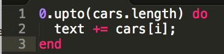
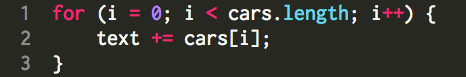
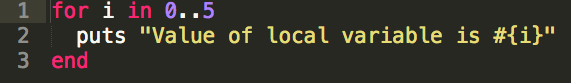
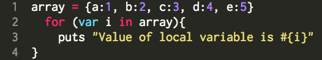
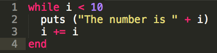
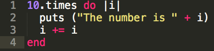
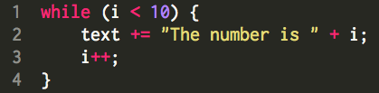

Taniya Prabhakar


Cheat Sheet
I'm Getting Loooooopy
Comparing JavaScript and Ruby Loops
03/28/2015
Ruby and JavaScript are very popular languages, and have ways to loop through data structures and objects similarly. The way the looping happens is a bit different sometimes, so let's compare them!
for loop: loops through a block of code a number of times
Ruby:
JavaScript:
for..in loop: loops through the properties of an object
Ruby:
JavaScript:
while loop: loops through a block of code while a specified condition is true
Ruby:
 JavaScript:
until vs do..while loop: Executes code until a specific conditional is true.